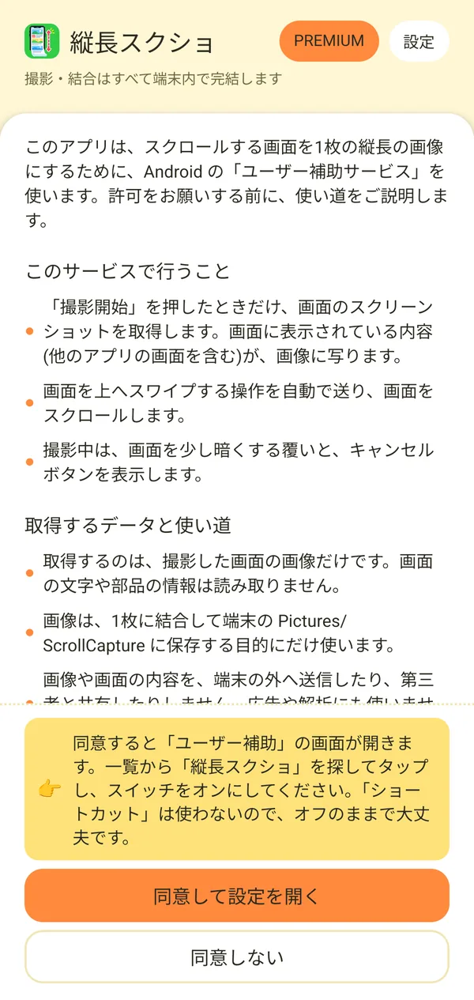
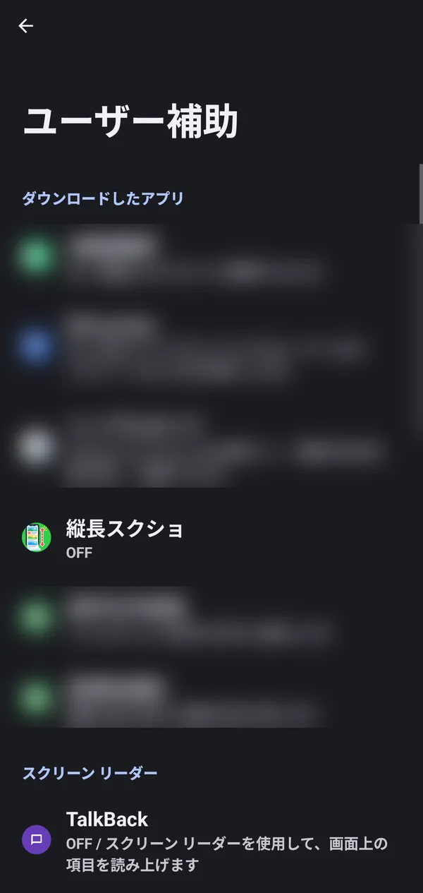
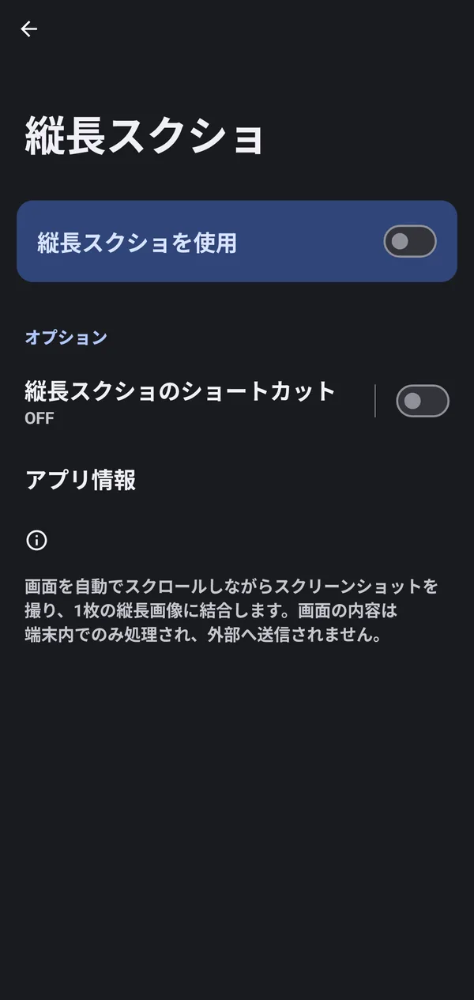
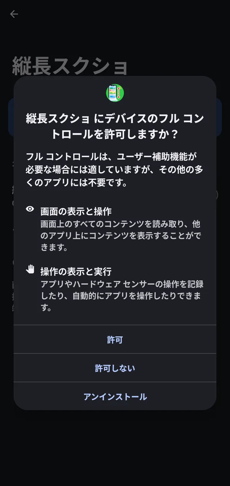
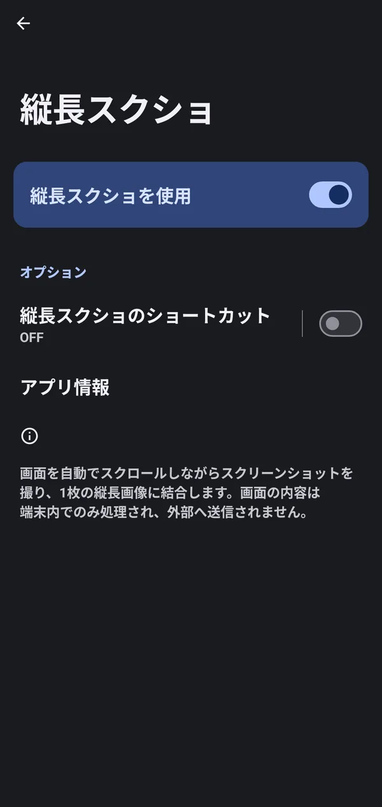
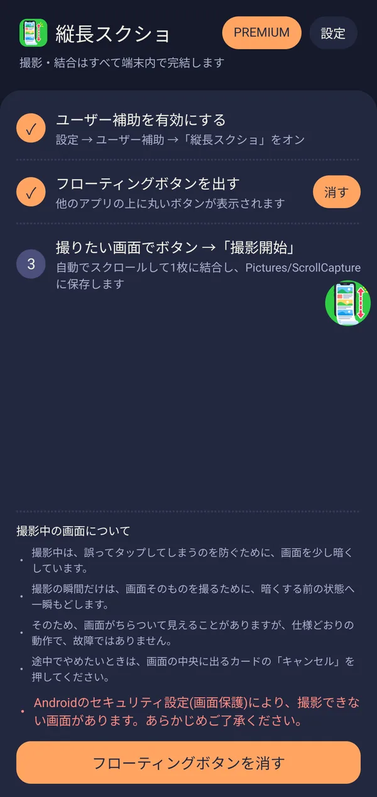
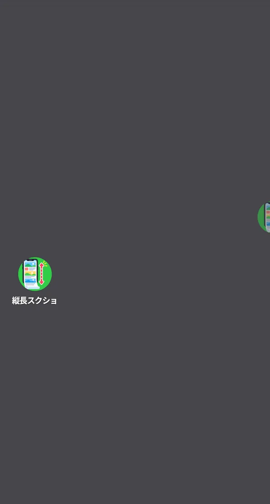
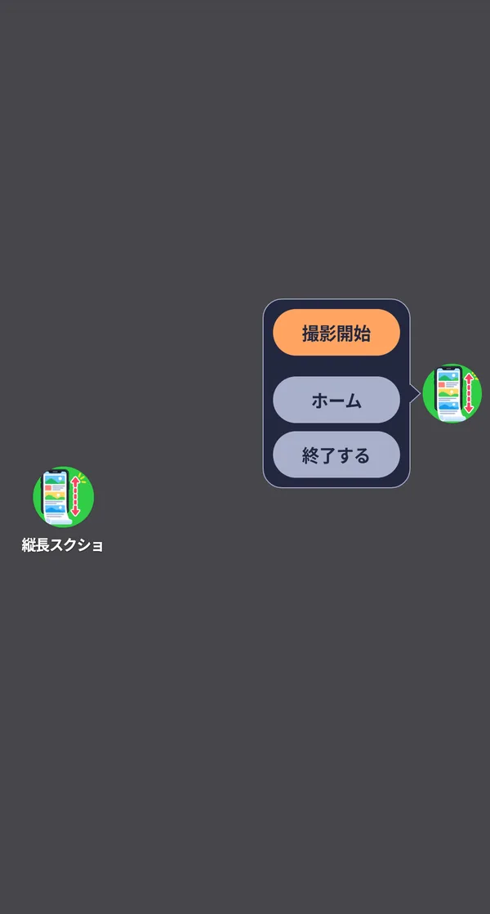

🎯 この章でできること
撮影を始める前の準備です。次の3つを済ませると、他のアプリの上にフローティングボタンが出て、いつでも撮影できるようになります。
🛠️ 詳しい操作手順
ユーザー補助の使い方の説明を読んで同意する
ホーム画面の「ユーザー補助を有効にする」を押すと、先にこのアプリが「ユーザー補助サービス」を何のために使うかの説明が表示されます。内容を読んで、問題なければ「同意して設定を開く」を押します。同意しない場合は「同意しない」を押すと、何も変わらずに戻ります。
- このサービスで行うこと: 「撮影開始」を押したときだけ画面のスクリーンショットを取得し、画面を上へスワイプする操作を自動で送ってスクロールします。撮影中は、画面を少し暗くする覆いとキャンセルボタンを表示します。
- 取得するデータと使い道: 取得するのは撮影した画面の画像だけで、画面の文字や部品の情報は読み取りません。画像は1枚に結合して端末に保存する目的にだけ使い、端末の外へ送信したり、第三者と共有したりしません。広告や解析にも使いません。

この説明は、あとから「設定」画面の「ユーザー補助の使用について」→「説明を見る」でもいつでも読み返せます。
ユーザー補助の画面で「縦長スクショ」をオンにする
「同意して設定を開く」を押すと、Androidの「ユーザー補助」の画面が開きます。次の順に操作してください。
- 一覧から「縦長スクショ」を探してタップします（「ダウンロードしたアプリ」の中にあります）。
- 「縦長スクショを使用」のスイッチをオンにします。
- 「縦長スクショ にデバイスのフル コントロールを許可しますか？」と表示されたら、内容を確認して「許可」を押します。




オンにしたあとアプリに戻ると、ホーム画面の「ユーザー補助を有効にする」にチェック（✓）が付きます。
フローティングボタンを出す・消す
ホーム画面の「フローティングボタンを出す」の右にある「出す」ボタン、または画面下の「フローティングボタンを表示」ボタンを押すと、他のアプリの上に丸いボタンが表示されます。表示中は、同じ場所のボタンが「消す」／「フローティングボタンを消す」に変わり、押すとボタンを消せます。


3つのステップがすべて済むと、あとは「撮りたい画面でボタンを押して「撮影開始」」だけです（撮影の方法は「撮影・保存」をご覧ください）。
フローティングボタンの動かし方とメニュー
- 動かす: ボタンを指でドラッグすると、好きな場所へ動かせます。離すと、近いほうの画面の縁へ寄ります。
- しばらく触らないとき: 少し時間がたつと、ボタンは半透明になって画面の縁に半分ほど隠れ、邪魔になりにくくなります。触ると元の表示に戻ります。
- メニューを開く: ボタンをタップすると、横に吹き出しのメニューが開きます。
メニューには次の3つのボタンがあります。メニューの外をタップすると、メニューが閉じます。
- 撮影開始: 今表示している画面の撮影を始めます。
- ホーム: 縦長スクショのアプリを開きます。
- 終了する: フローティングボタンを消します。


画面がオフの間やロック画面の間、フローティングボタンは一時的に表示されなくなります。ロックを解除すると、元の位置に戻ります。
❓ 準備についてのよくある質問
Q 「ショートカット」はオンにする必要がありますか？
いいえ。このアプリでは使わないので、オフのままで大丈夫です。必要なのは「縦長スクショを使用」のスイッチだけです。
Q フローティングボタンが見当たりません。
しばらく触らないと、ボタンは半透明になって画面の縁に半分ほど隠れます。画面の端を探してみてください。それでも見つからないときは、アプリのホーム画面で「出す」を押し直してください。
Q ユーザー補助をオフにするとどうなりますか？
フローティングボタンは使えなくなり、撮影もできなくなります。もう一度使いたいときは、ユーザー補助の画面で「縦長スクショを使用」をオンにしてください。
Q フローティングボタンを消したいです。
ボタンをタップして出るメニューの「終了する」、またはアプリのホーム画面の「消す」「フローティングボタンを消す」を押してください。